Comment lire ce guide
Chaque action est décrite en étapes numérotées. La capture d'écran se trouve juste en dessous. Les éléments importants sont entourés en rouge.
1. Ce que fait le site en 3 phrases
WEIGO est le site d'inscription au WEI. Les étudiants y créent un compte, remplissent leurs informations et déposent leurs documents.
Le BDE y vérifie les dossiers, valide les inscriptions, organise le covoiturage et répond aux questions.
Tout se fait en ligne, dans un navigateur. Il n'y a rien à installer.
2. Les deux espaces
Espace participants
Espace BDE (admin)
Adresse : l'adresse du site (ex. https://weigo.vercel.app)
Adresse : l'adresse du site suivie de /admin.html
Qui : chaque étudiant, avec son propre compte.
Qui : vous, avec le compte bde.
Un étudiant voit uniquement son dossier : ses infos, ses documents, ses messages avec le BDE.
Vous voyez tous les dossiers. Vous pouvez valider, ouvrir les documents, assigner un chauffeur et répondre.
Bon à savoir
La page admin est invisible pour les étudiants. S'ils tapent son adresse, ils sont renvoyés vers l'accueil. Seul le compte bde peut l'ouvrir.
Tapez l'adresse du site (ex. https://weigo.vercel.app). Vous arrivez sur la page d'accueil.
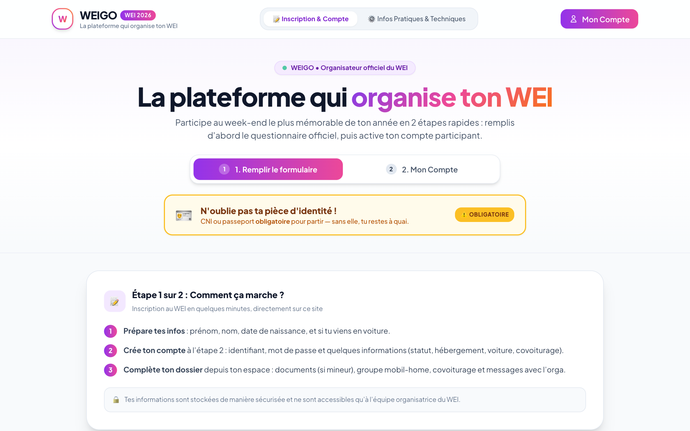
La page d'accueil du site.
Cliquez sur le bouton « Mon Compte » en haut à droite.
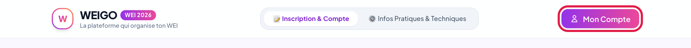
Le bouton « Mon Compte », entouré en rouge.
Cliquez sur la carte « Connexion » (à gauche).
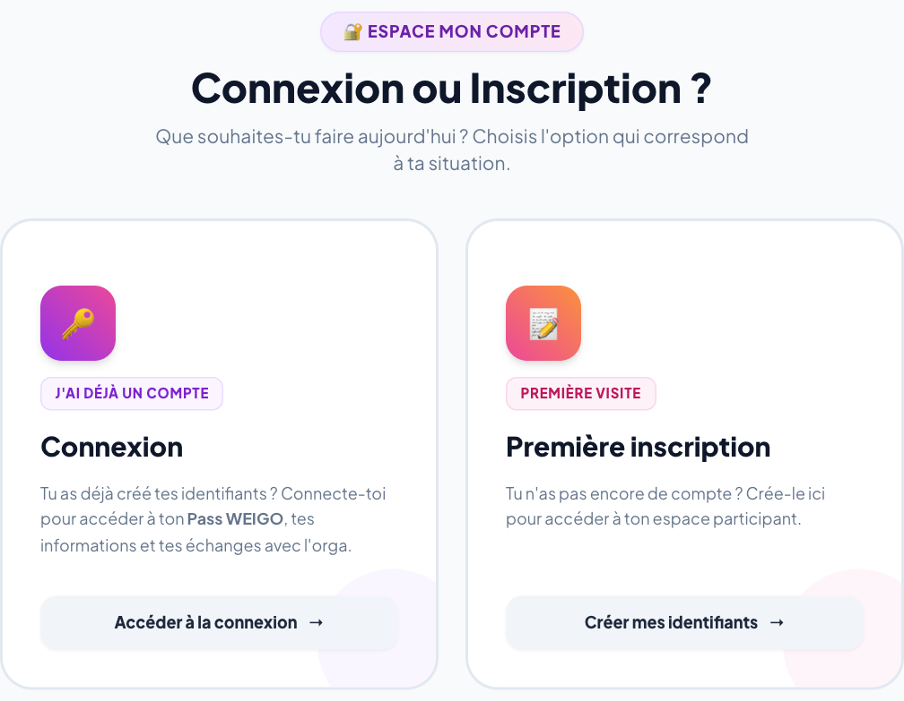
Choisissez « Connexion ».
Dans « Identifiant », tapez bde.
Dans « Mot de passe », tapez le mot de passe BDE (transmis séparément).
Cliquez sur le grand bouton « Se connecter & Valider mon Pass ».
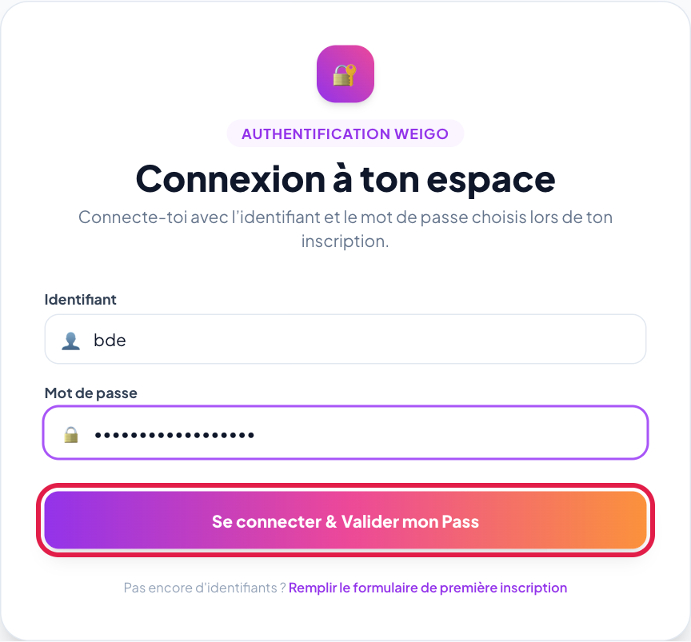
Le formulaire de connexion, rempli avec l'identifiant bde.
Descendez tout en bas de la page. Cliquez sur le bouton violet « Espace BDE (admin) ».
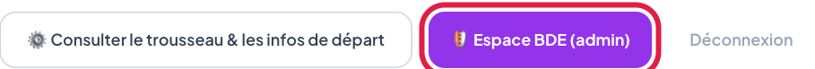
Ce bouton n'apparaît que pour le compte bde.
Vous êtes sur la page admin. Bravo !
Raccourci
Une fois connectée, vous pouvez aussi taper directement l'adresse du site suivie de /admin.html. La connexion reste active 7 jours sur le même navigateur.
4. La page admin, écran par écran
4.1 La liste des participants
Chaque participant a une fiche (un rectangle blanc). Les fiches sont affichées deux par ligne. En haut à gauche, un compteur indique le nombre de participants, de dossiers validés et de dossiers en attente.
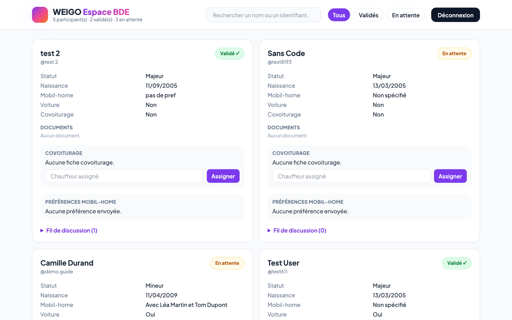
La page admin avec la liste des participants.
4.2 Chercher et filtrer
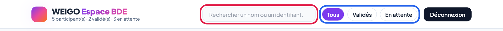
En rouge : la recherche. En bleu : les filtres.
Pour trouver quelqu'un : cliquez dans la case « Rechercher un nom ou un identifiant… » et tapez son prénom, son nom ou son identifiant. La liste se met à jour toute seule.
Pour voir seulement les dossiers validés : cliquez sur « Validés ».
Pour voir seulement les dossiers à traiter : cliquez sur « En attente ».
Pour tout revoir : cliquez sur « Tous ».
4.3 La fiche d'un participant, zone par zone
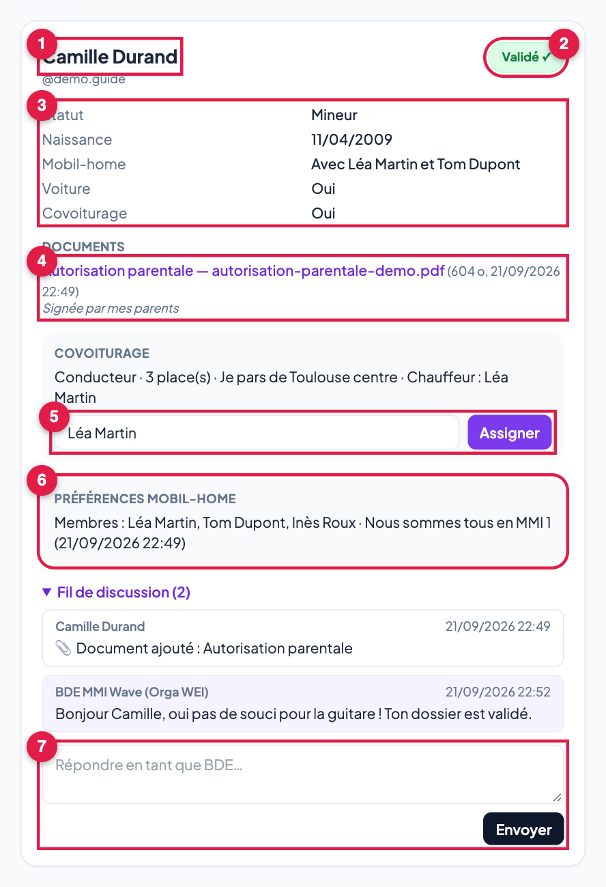
Une fiche participant, avec le fil de discussion ouvert.
1Nom et identifiant du participant.
2Bouton de validation. Orange = « En attente ». Vert = « Validé ✓ ». Un clic change l'état.
3Informations d'inscription : majeur ou mineur, date de naissance, souhait de mobil-home, voiture, covoiturage.
4Documents envoyés par le participant. Un clic sur le nom ouvre le document.
5Covoiturage : ce que le participant a déclaré, et la case pour assigner un chauffeur.
6Préférences mobil-home : avec qui il souhaite être logé.
7Fil de discussion : les messages échangés, et la zone pour répondre.
Astuce
Le fil de discussion est replié par défaut. Cliquez sur « Fil de discussion (…) » pour l'ouvrir. Le chiffre entre parenthèses est le nombre de messages.
4.4 Valider un dossier (ou le remettre en attente)
Un dossier se valide quand tout est en ordre : informations correctes et, pour un mineur, autorisation parentale et décharge présentes.
Trouvez la fiche du participant (avec la recherche si besoin).
Cliquez sur le bouton orange « En attente », en haut à droite de la fiche.
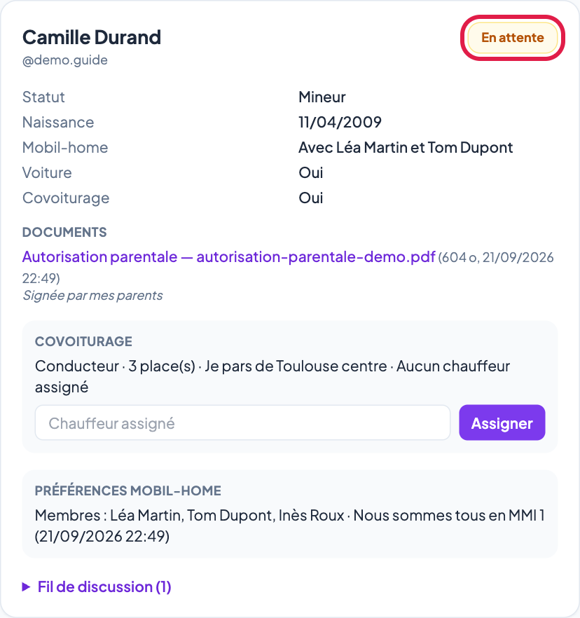
Le bouton de validation, avant le clic.
Le bouton devient vert « Validé ✓ ». Un message vert de confirmation apparaît en haut de la page.
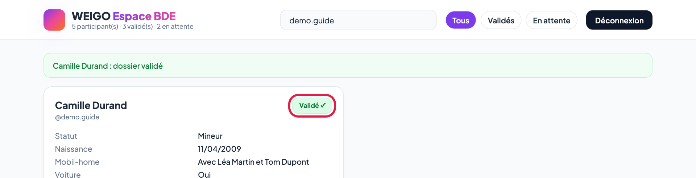
Après le clic : le dossier est validé et le compteur se met à jour.
Pour annuler : cliquez de nouveau sur le bouton vert. Il repasse en orange « En attente ».
Ce que voit le participant
Dès la validation, son espace affiche « Dossier validé » et son Pass passe en vert. Pas besoin de le prévenir.
4.5 Voir un document
Dans la fiche, regardez la zone « Documents ».
Cliquez sur le nom du document (en violet).
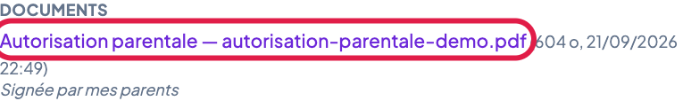
Le lien du document, entouré en rouge.
Le document s'ouvre dans un nouvel onglet du navigateur. Fermez cet onglet pour revenir à la page admin.
Si la zone indique « Aucun document. », le participant n'a encore rien envoyé.
4.6 Assigner un chauffeur
Utile pour les participants sans voiture. Le nom que vous tapez s'affiche dans leur espace.
Dans la fiche, allez dans la zone « Covoiturage ».
Cliquez dans la case « Chauffeur assigné » et tapez le nom du chauffeur (par exemple « Léa Martin »).
Cliquez sur « Assigner ».
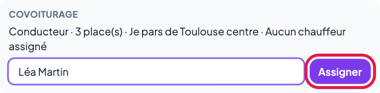
La case du chauffeur et le bouton « Assigner ».
Un message vert confirme. Le nom apparaît dans le résumé « Chauffeur : … ».
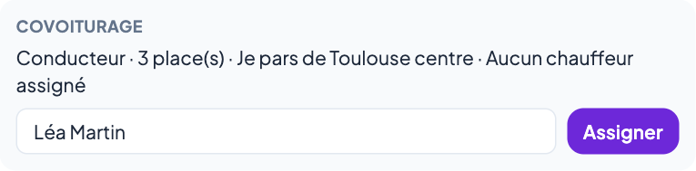
Le chauffeur est enregistré.
Pour retirer un chauffeur : videz la case et cliquez sur « Assigner ».
4.7 Répondre à un participant
Dans la fiche, cliquez sur « Fil de discussion (…) » pour l'ouvrir.
Lisez les messages. Ceux du participant sont sur fond blanc, ceux du BDE sur fond violet clair.
Cliquez dans la case « Répondre en tant que BDE… » et tapez votre réponse.
Cliquez sur « Envoyer ».
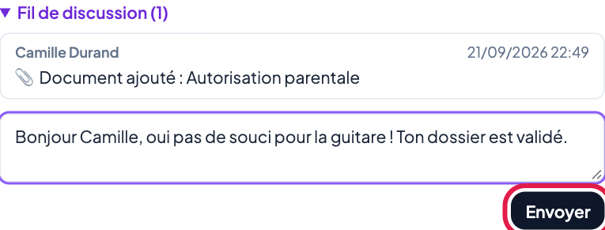
Le fil de discussion et la zone de réponse.
Votre réponse apparaît dans le fil. Le participant la voit dans son espace avec l'étiquette « Staff ».
La réponse du BDE est ajoutée au fil.
Il n'y a pas de notification
Le participant ne reçoit pas d'e-mail. Il voit votre réponse quand il se connecte. Pour une urgence, contactez-le directement.
4.8 Se déconnecter
Cliquez sur le bouton noir « Déconnexion », en haut à droite de la page admin.
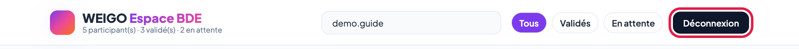
Le bouton « Déconnexion » de la page admin.
Vous revenez sur la page d'accueil. C'est terminé.
5. Ce que voient les participants
Cette partie vous aide à répondre aux questions des étudiants. Vous n'avez rien à faire ici, c'est pour comprendre leur côté.
5.1 L'inscription
Sur l'accueil, l'étudiant clique sur « Mon Compte », puis sur « Première inscription ». Il remplit ce formulaire :
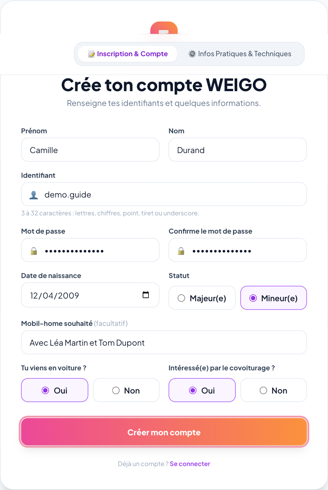
Le formulaire de création de compte.
Prénom, nom, identifiant (lettres, chiffres, points ou tirets) et mot de passe (8 caractères minimum).
Date de naissance, majeur ou mineur.
Souhait de mobil-home (facultatif), voiture (oui/non), covoiturage (oui/non).
Ensuite, il se connecte avec son identifiant et son mot de passe, comme vous.
5.2 Le tableau de bord
Après connexion, l'étudiant voit son espace personnel. En haut : son nom, son Pass et l'état de son dossier.
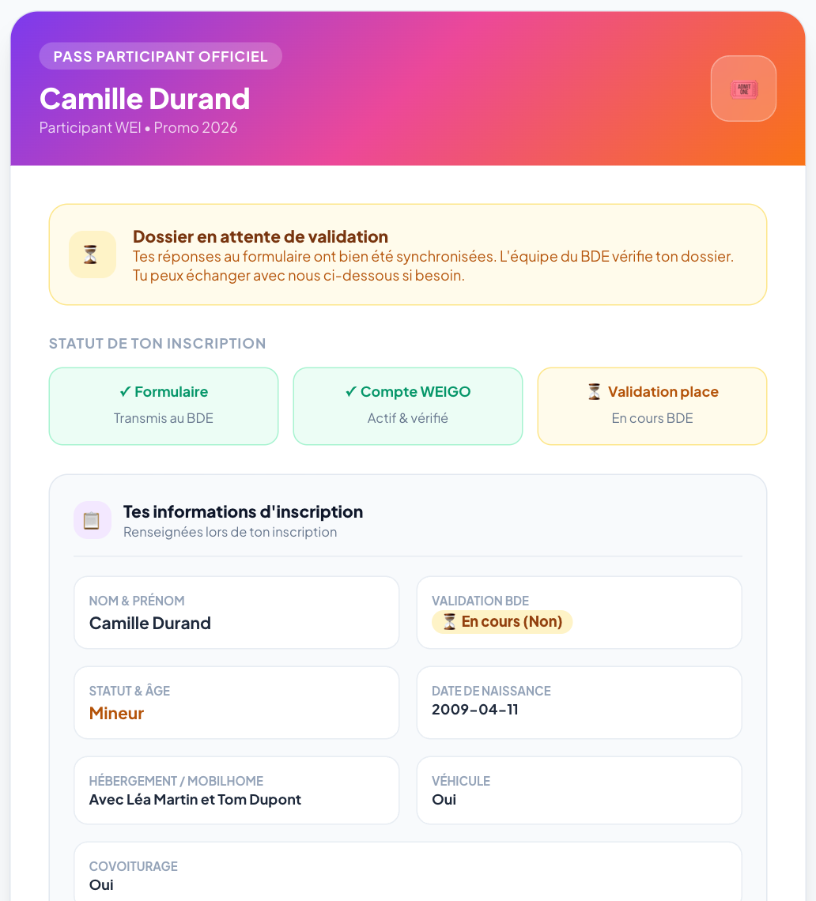
Le tableau de bord d'un participant dont le dossier est en attente.
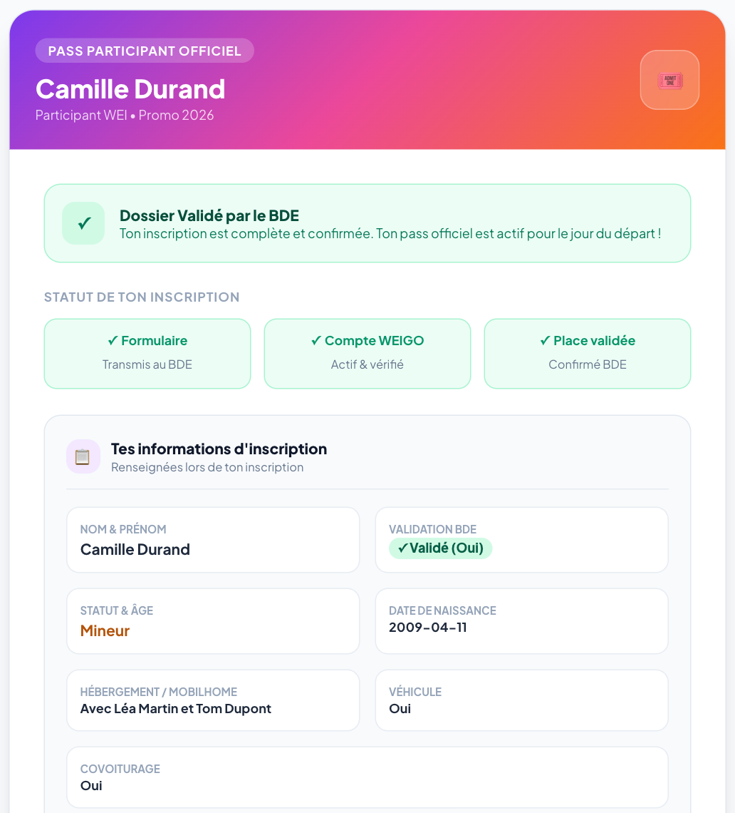
Le même tableau de bord une fois le dossier validé par le BDE.
5.3 Les documents
Seuls les mineurs ont des documents obligatoires : l'autorisation parentale signée et la décharge. Les majeurs voient un message « aucune pièce requise ».
Pour envoyer un document, l'étudiant choisit le type de pièce, sélectionne un fichier sur son ordinateur ou son téléphone, puis clique sur « Transmettre le document ».
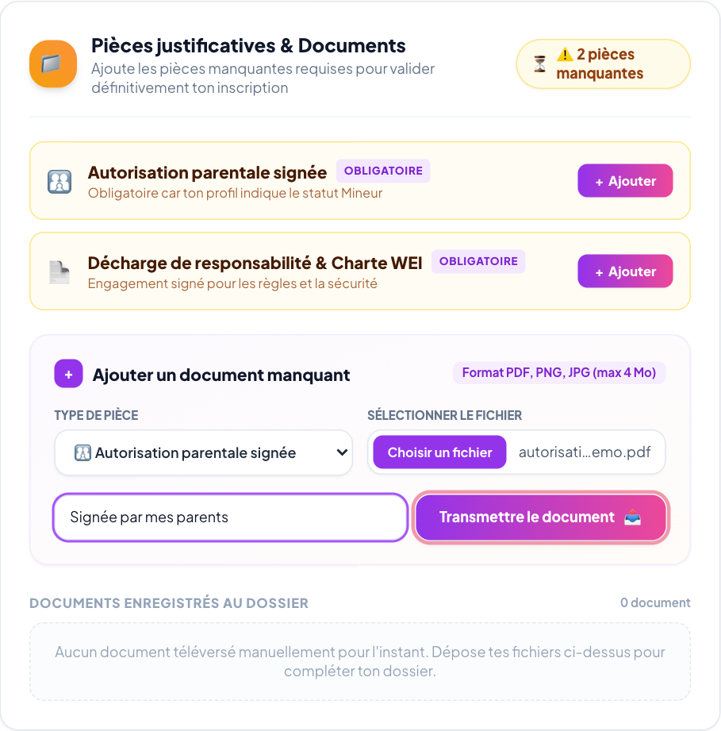
La zone d'envoi de document, prête à être transmise.
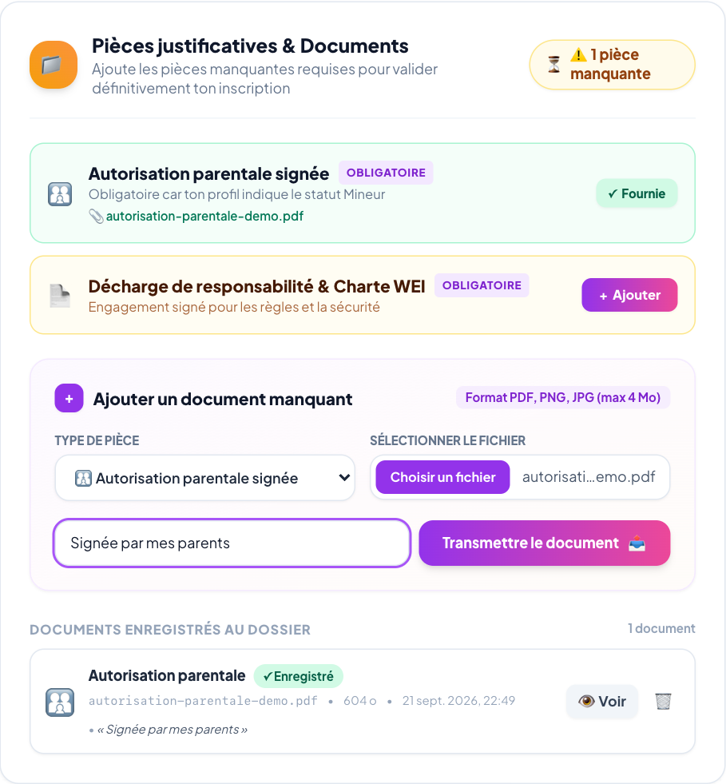
Après l'envoi : le document est listé et la case est cochée.
Formats acceptés
PDF, JPG ou PNG uniquement. 4 Mo maximum par fichier. 10 fichiers maximum par participant.
5.4 Les messages
L'étudiant peut vous écrire depuis la zone « Communication avec l'équipe BDE ». Vos réponses apparaissent avec l'étiquette Staff.
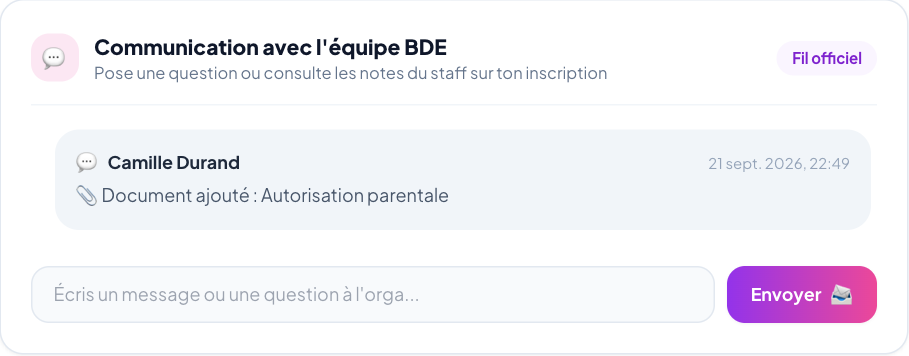
Le fil de messages, côté participant, après l'envoi d'une question.
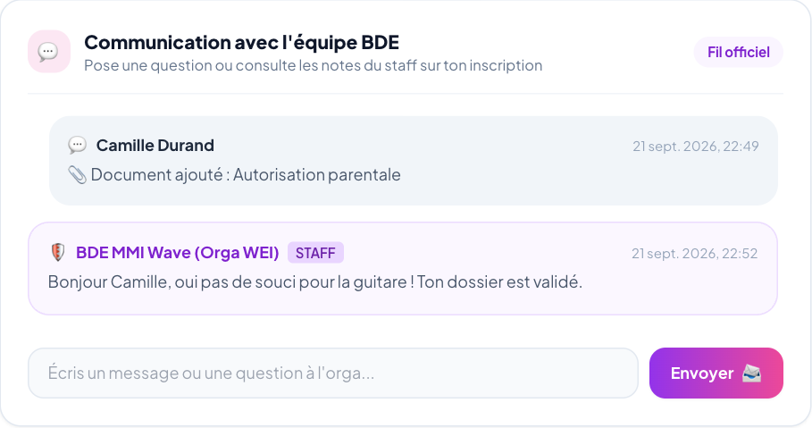
La réponse du BDE apparaît avec l'étiquette « Staff ».
5.5 Le mobil-home
L'étudiant indique avec qui il souhaite être logé, et une note facultative. Vous retrouvez ces informations dans sa fiche admin, zone « Préférences mobil-home ».
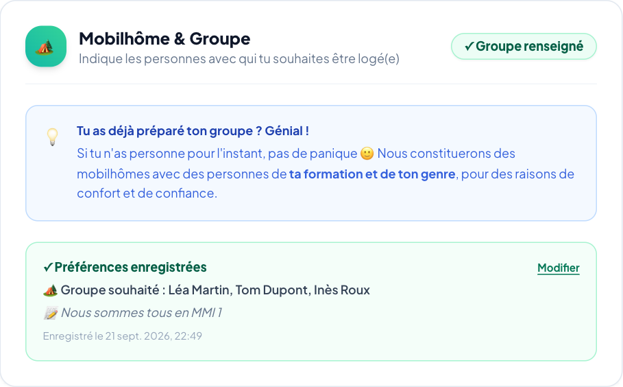
Les préférences mobil-home, une fois enregistrées.
5.6 Le covoiturage
Trois cas possibles, selon les réponses données à l'inscription :
Voiture + covoiturage : l'étudiant est conducteur. Il indique son nombre de places libres.
Pas de voiture : l'étudiant est passager. Il attend que vous lui assigniez un chauffeur (voir 4.6).
Voiture sans covoiturage : rien à faire.
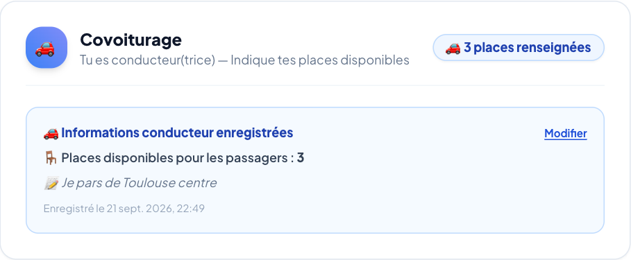
La section covoiturage d'un conducteur ayant déclaré 3 places.
5.7 Se déconnecter
Le bouton « Déconnexion » est tout en bas de l'espace personnel.
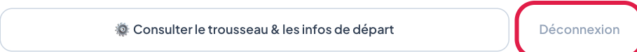
Le bouton « Déconnexion » côté participant.
6. Questions fréquentes
« J'ai oublié mon mot de passe. »
Il n'existe pas encore de bouton « mot de passe oublié ». Le BDE ne peut pas voir les mots de passe, ni les changer.
Solution : le participant crée un nouveau compte avec un autre identifiant. Il vous indique l'ancien identifiant à ignorer. Vous ne validez que le nouveau dossier.
« Mon fichier est refusé. »
Vérifiez trois choses : le format (PDF, JPG ou PNG seulement), la taille (4 Mo maximum) et le nombre de fichiers (10 maximum). Une photo prise avec un téléphone est souvent trop lourde : demandez une version réduite ou un PDF.
« Le site dit "Trop de tentatives". »
Après trop d'essais de connexion ratés, le site bloque pendant 15 minutes pour se protéger. Il faut simplement attendre, puis réessayer avec le bon mot de passe.
« Je ne vois pas mon chauffeur. »
Le nom du chauffeur n'apparaît que lorsque vous l'avez tapé dans la fiche admin et cliqué sur « Assigner » (voir 4.6). Les conducteurs, eux, ne voient pas de chauffeur : c'est normal.
« Comment savoir s'il manque un document ? »
Dans la fiche admin, la zone « Documents » liste ce qui a été envoyé. Pour un mineur, il faut voir deux lignes : « Autorisation parentale » et « Décharge ». S'il en manque une, ne validez pas et écrivez-lui dans le fil de discussion.
« Le participant ne voit pas ma réponse. »
Il doit se connecter à son espace : il n'y a pas d'e-mail automatique. Demandez-lui de recharger la page.
7. Sécurité — les règles simples
Ne partagez jamais le mot de passe BDE. Pas par message, pas par e-mail, pas sur un post-it.
Déconnectez-vous sur un ordinateur partagé ou public (bouton « Déconnexion », voir 4.8).
La page admin est invisible pour les étudiants. Ils ne peuvent ni la voir ni la modifier.
Les documents des participants ne sont visibles que par eux et par le compte BDE. Ne les téléchargez pas sur un ordinateur partagé.
Les données sont hébergées de façon sécurisée (Neon / Vercel). Vous n'avez rien à sauvegarder ni à gérer.
Si quelque chose semble anormal (page bizarre, compte inconnu, message étrange), ne touchez à rien et contactez : [Nom du responsable technique].
En cas de doute sur le mot de passe
Si vous pensez que le mot de passe BDE a été vu par quelqu'un d'autre, prévenez tout de suite le responsable technique. Lui seul peut le changer.
8. En cas de problème
Ce que vous voyez
Ce qu'il faut faire
La page admin renvoie à l'accueil.
Vous n'êtes pas connectée avec le compte bde. Reconnectez-vous (partie 3), puis réessayez.
« Identifiant ou mot de passe incorrect. »
Vérifiez les majuscules et les espaces. Le mot de passe est celui transmis séparément.
« Trop de tentatives ».
Attendez 15 minutes, puis réessayez.
La liste affiche « Erreur de chargement ».
Rechargez la page (touche F5 ou ⌘R). Si cela persiste, contactez le responsable technique.
Un document ne s'ouvre pas.
Vérifiez que votre navigateur n'a pas bloqué le nouvel onglet (« pop-up bloqué »). Autorisez-le et recliquez.
Un participant dit qu'il ne peut pas envoyer son fichier.
Format PDF/JPG/PNG, 4 Mo maximum. Demandez-lui un fichier plus léger.
Un participant apparaît deux fois.
Il a créé deux comptes (souvent après un mot de passe oublié). Ne validez que le bon, ignorez l'autre.